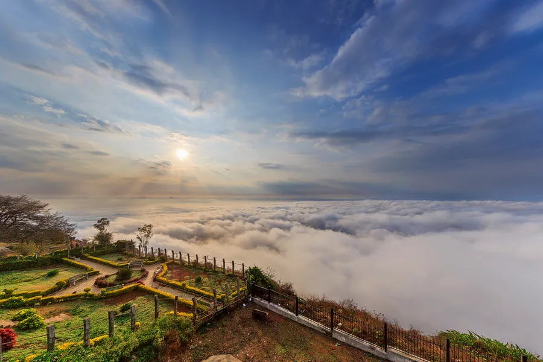
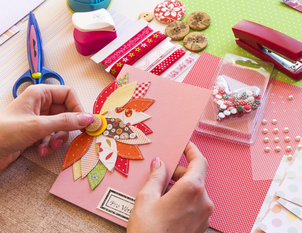
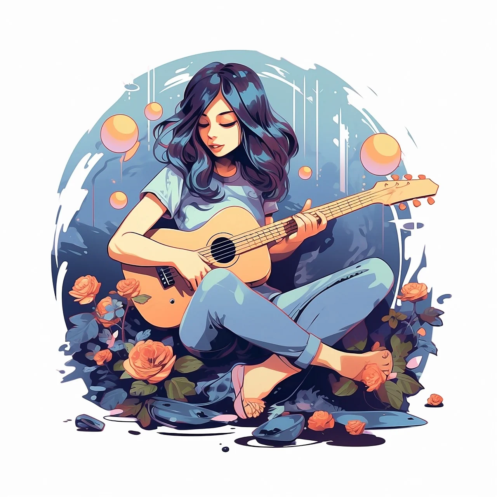

My Trekking Experiences
Trekking has been a transformative journey, with my first solo trek at Nandi Hills igniting a lifelong passion for adventure and self-discovery.
Trekking has always been more than just a hobby for me—it's a journey into the unknown, a way to connect with nature, and a challenge that pushes me beyond my limits. My first solo trek was at Nandi Hills, a stunning destination just outside of Bangalore. This trek was not only a test of my physical endurance but also a profound experience of self-discovery. The early morning mist enveloped the hills, creating a serene and almost mystical atmosphere. As I ascended, the trails led me through lush greenery and steep slopes, each step bringing a mix of excitement and anticipation. The solitude allowed me to reflect, listen to the sounds of nature, and truly appreciate the beauty around me. Reaching the summit was a moment of triumph—a breathtaking view of the sunrise over the horizon, with the city below slowly waking up.Nandi Hills holds a special place in my heart, not just because it was my first solo trek, but because it marked the beginning of a new chapter in my life—a chapter filled with adventure, exploration, and a deep connection with the world around me. This experience ignited a passion for trekking that continues to drive me to explore new trails and embrace the challenges of the great outdoors. Over time, trekking has become my way of escaping the daily hustle, finding peace in nature’s embrace, and rejuvenating my mind and body. With each trek, I discover more about myself and the world, realizing that the journey is just as important as the destination.The bond with the landscapes I traverse deepens with every step I take. Whether it’s the towering peaks of the Himalayas, the dense forests of the Western Ghats, or the tranquil paths of a local trail, each trek leaves an indelible mark on my soul. Trekking has taught me resilience, patience, and the beauty of slowing down and savoring the simple joys of life. The call of the mountains, the thrill of discovering hidden trails, and the joy of standing atop a summit with the world spread out below are experiences that words can hardly capture. They are moments that remind me why I fell in love with trekking in the first place, and why I will continue to seek out new adventures for as long as I can.
Crafting: A Creative Journey
Trekking has been a transformative journey, with my first solo trek at Nandi Hills igniting a lifelong passion for adventure and self-discovery.
Crafting has always been my creative escape, a way to express myself through colors, textures, and intricate designs. During my college years, this passion blossomed into a small business that helped me cover my expenses. I immersed myself in creating personalized scrapbooks, explosion boxes, and handmade cards—each piece was a labor of love, designed to capture memories and emotions in a tangible form.Creating scrapbooks was like weaving stories through photos, embellishments, and thoughtful layouts. Every page was a new canvas, an opportunity to preserve special moments in a unique and personalized way. Each scrapbook told a story, turning fleeting memories into lasting treasures.Explosion boxes became another favorite project of mine. These seemingly simple boxes opened up to reveal layers of surprises—photos, small trinkets, and heartfelt messages, all crafted with meticulous care. The joy of watching someone's eyes light up as they unfolded these boxes was incredibly fulfilling.Running a small business while juggling college life was a challenging but rewarding experience. It taught me valuable lessons in time management, creativity, and entrepreneurship. The process of turning my passion into a business not only helped me financially but also gave me the satisfaction of sharing my creations with others.Crafting remains a cherished hobby for me, serving as a reminder of those early days of creativity and the joy of making something beautiful with my own hands. It’s more than just a pastime; it's a way to connect with others, evoke emotions, and celebrate life's special moments in a tangible and heartfelt manner.
Painting: A Colorful Past
Trekking has been a transformative journey, with my first solo trek at Nandi Hills igniting a lifelong passion for adventure and self-discovery.

Painting has always been a significant part of my life, a passion that began when I was just a child. I remember spending hours with my brushes and colors, lost in a world of creativity. My dedication to painting paid off early, as some of my artworks were featured in newspapers—a proud moment for both me and my family. Those early days were filled with the thrill of winning prizes and gaining recognition for my art, which only fueled my love for painting even more.Each stroke of the brush was more than just a movement; it was a way for me to channel my thoughts and emotions onto the canvas. The vibrant hues and delicate details of my paintings became a means of communicating my inner world, allowing others to see life through my eyes. The recognition I received for my work was not just a personal achievement but a validation of my creative spirit, encouraging me to explore and refine my skills further.Painting wasn't just a hobby; it was a profound connection to the world around me and a way to share my unique perspective with others. It taught me to see beauty in the ordinary and to express myself in ways words could not. The process of creating art was both a journey of self-discovery and a means of touching the lives of those who experienced my work.Though my path has led me in different directions since those formative years, the joy of painting remains a cherished part of who I am. It’s a reminder of my childhood, a time when I first discovered the transformative power of art and creativity. Painting continues to bring color and meaning to my life, offering solace and inspiration as I navigate the complexities of adulthood.
Music: My Melodic Escape
Trekking has been a transformative journey, with my first solo trek at Nandi Hills igniting a lifelong passion for adventure and self-discovery.
Music has always been a soulful retreat for me, a way to unwind and express myself. During my college years, I found joy in playing the guitar and ukulele, often spending hours strumming chords and singing along to my favorite tunes. Whether it was a quiet evening in my room or a casual gathering with friends, music was always there, filling the air with melodies that resonated with my emotions.Playing the guitar and ukulele was more than just a pastime—it was a form of self-expression that allowed me to connect with others and share my love for music. The gentle strum of the ukulele and the rich tones of the guitar created a soothing backdrop for the songs that became the soundtrack of my college life. Each chord progression and melody was a reflection of my experiences and feelings, and singing along was the final touch that wove those emotions into a cohesive narrative. Music also served as a bridge between me and my friends, often becoming the centerpiece of our gatherings. The spontaneous jam sessions, where we would trade songs and harmonies, were some of the most memorable moments of my college years. These experiences not only deepened my appreciation for music but also forged lasting connections with those around me.Even now, picking up my guitar or ukulele brings back a profound sense of nostalgia and peace. It’s a connection to the moments that shaped who I am today—a reminder of carefree days when a song had the power to make everything feel just right. Music continues to be a cherished part of my life, providing comfort and joy, and reminding me of the power of melody and lyrics to capture and express the essence of our experiences.
About Me: A Journey Through Passions
I'm Poushali Aich, a developer with a deep-seated love for creativity, exploration, and personal growth. My journey has been shaped by a variety of passions, each contributing to the person I am today.From a young age, I found joy in painting, a passion that earned me recognition when my artworks were featured in newspapers and won numerous prizes. This early success in the arts laid the foundation for my creative pursuits, which later expanded into crafting. During my college years, I turned this passion into a small business, making personalized scrapbooks, explosion boxes, and handmade cards. These creative ventures not only supported me financially but also allowed me to bring joy to others.Music has been another constant in my life. I spent countless hours playing the guitar and ukulele during my college days, using music as a form of self-expression and connection. The melodies I created were the soundtrack to some of my most cherished memories.In addition to these creative pursuits, I’ve always had a thirst for adventure. My first solo trek at Nandi Hills, Bangalore, marked the beginning of my love for trekking and exploration. This experience taught me resilience and the thrill of discovering new places, a passion that continues to inspire me.Today, I blend my technical skills as a developer with my creative and adventurous spirit. Whether I'm crafting, playing music, or exploring the great outdoors, I strive to live a life full of passion and purpose, always eager to embrace new experiences and challenges.